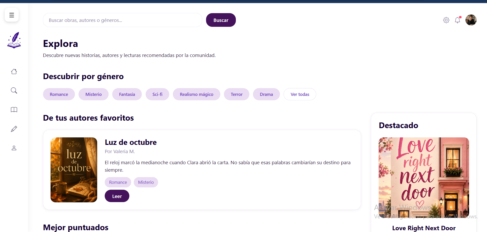
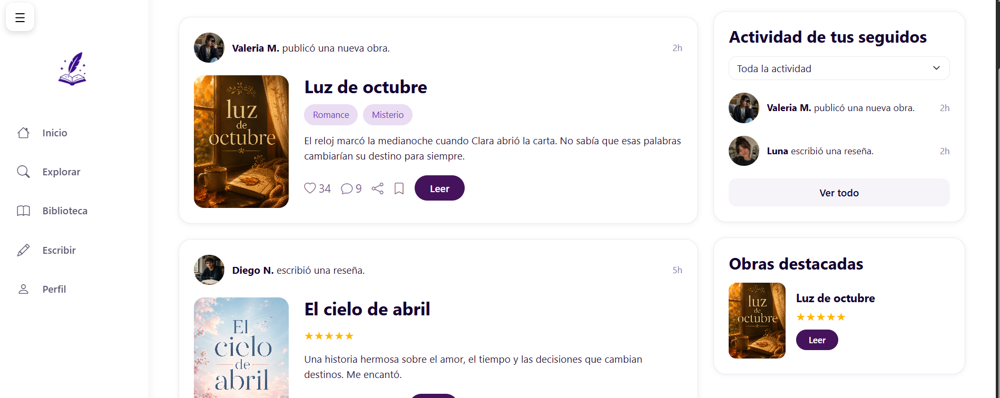

Caliope – Literary Social Network Platform


Project Overview
Caliope is a full-stack social networking platform developed during a two-month Java Full Stack Bootcamp capstone project. The platform allows users to publish, discover, review, and rate literary works, creating an interactive community for readers and writers.
The project was designed to combine social networking features with literary content sharing, encouraging user engagement through reviews, ratings, and discussions..